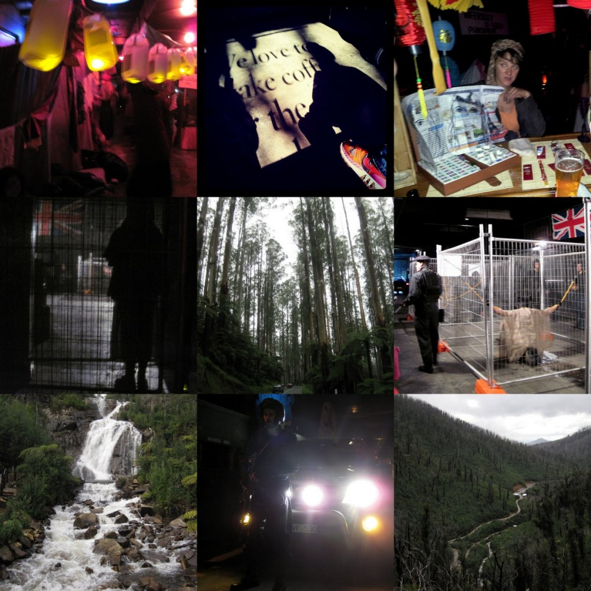

The combination of this week’s pictures seem a bit weird.. like being forced into a basement-like internment camp with armed guards and subsequently the escape to wilderness – all in a typical Melbourne weekend! No, I haven’t signed myself up for some extreme boot camp where armed guards force you to lose weight – fast. Just Underground Cinema where they put you in a movie by recreating scenes and characters from a movie before screening the movie and a trip to the Yarra Ranges which was decimated by bush fires 2 years ago. I’m pretty stoked that there are such beautiful forests so close to the city! Seems that my dream to do the “run/trail bike on the weekends in giant forests” lifestyle isn’t too far away. Can’t say the same about my dream about riding a unicorn through giant forests.. hmm. Ok you didn’t hear that. Olympics in full swing right now, really missing out, I don’t even have tv!  Miss you London lot! Hope all’s well. Love, Shi. ps: Movie was Children of Men.
Miss you London lot! Hope all’s well. Love, Shi. ps: Movie was Children of Men.
© 2012 admin
